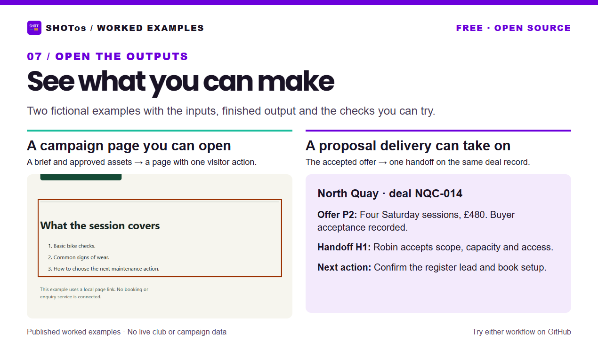
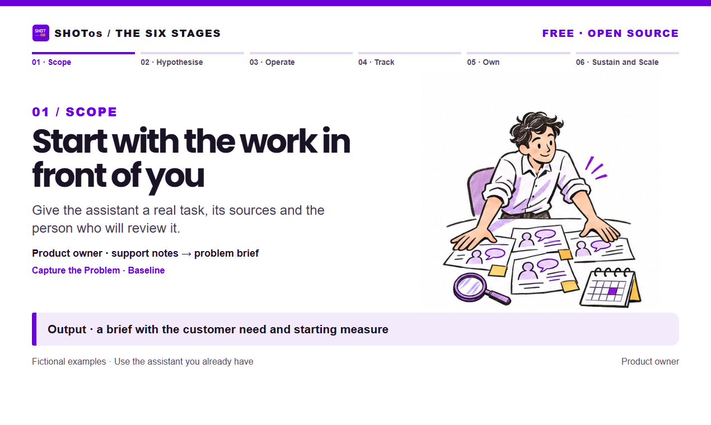
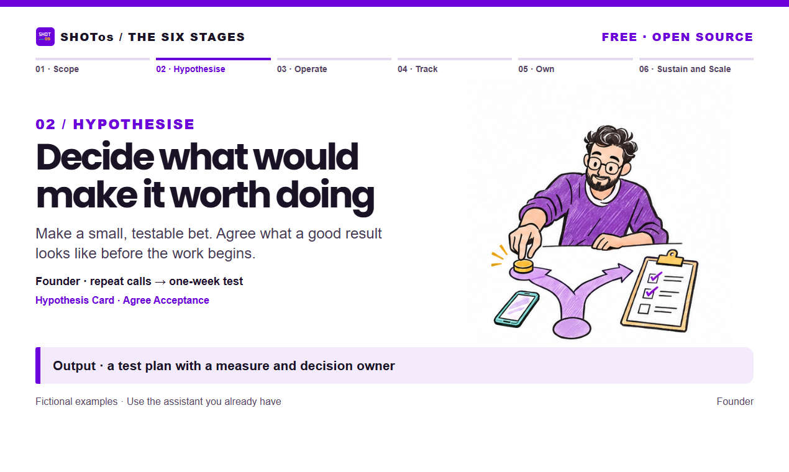
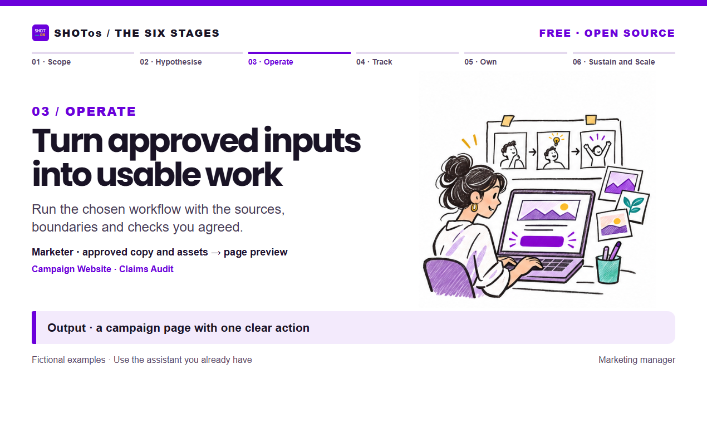
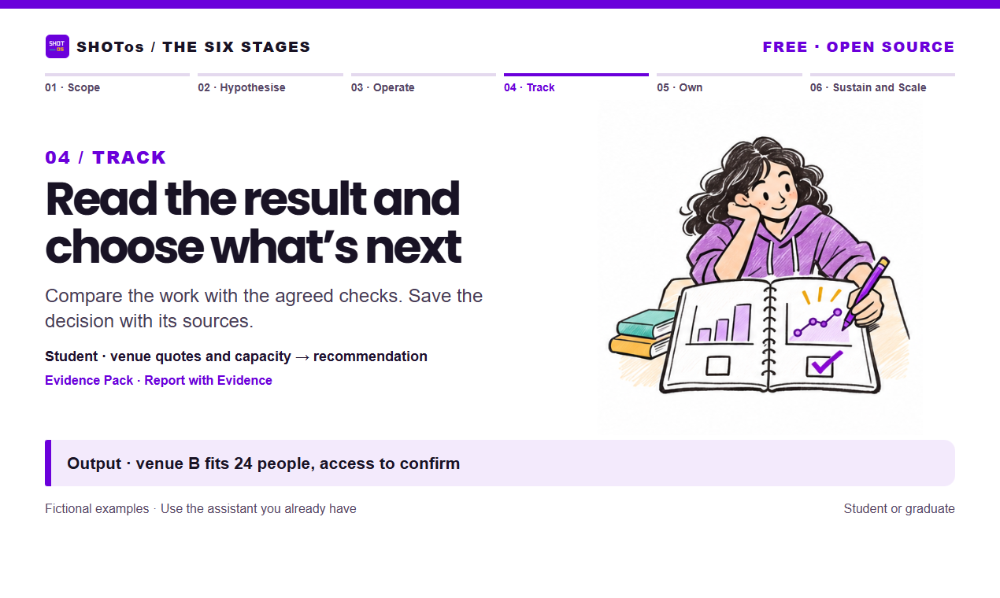
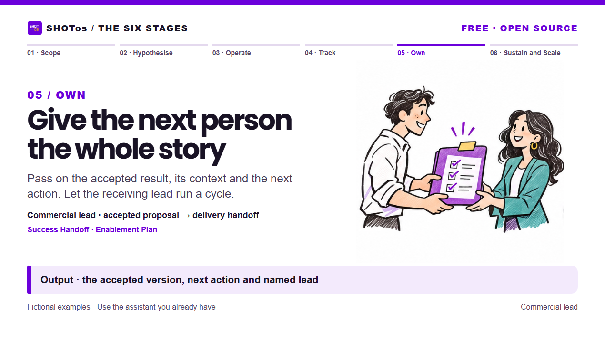
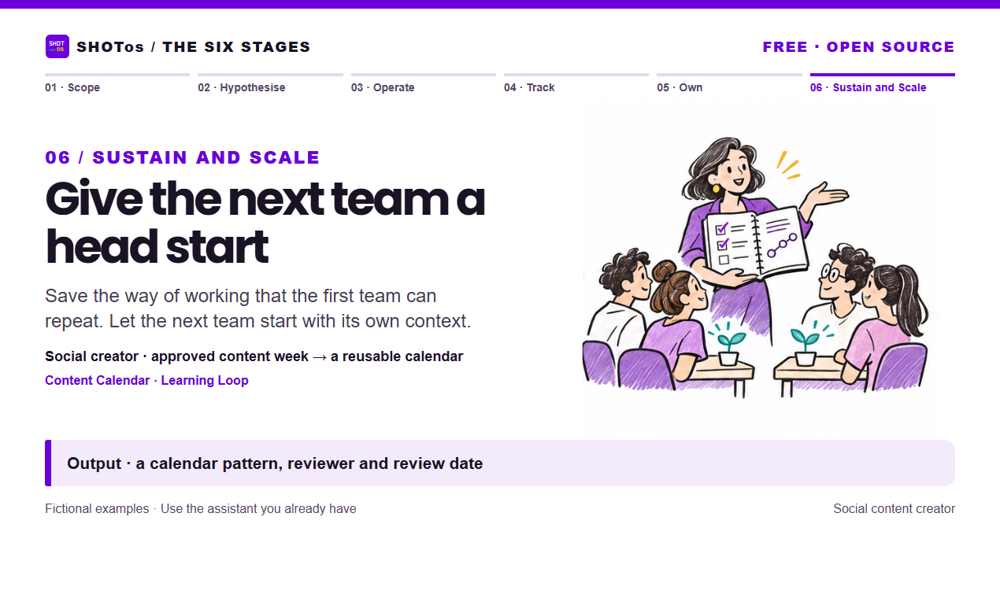
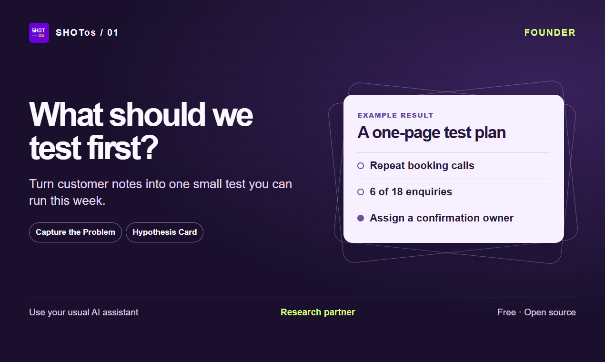

Free and open source · MIT and CC BY 4.0
Free AI workflows, from the first brief to a result someone can own.
SHOTos turns the AI assistant you already use into a small, careful team. It starts from your context, agrees what done looks like before it starts, checks the real result where it lives and tells you plainly what it could not check.
Set up in five minutesStart here
Latest release: SHOTos 1.17.0 · Source on GitHub

Why it exists
Most AI help fails in the same few ways. None of them is fixed by a cleverer prompt. They are fixed by a process: say who the work is for and what would show it worked, test the idea small, check the real result and hand it to someone who can own it. Good teams already work this way. SHOTos writes that process down so an agent can follow it and a person can check it did.
the assistant guesses at facts it was never given.
it starts from your context: the task, its sources and the person who will review it.
it does the task it imagined, not the one you meant.
it agrees what done looks like, including one check that should fail, before any work starts.
it says "done" from memory of what it intended.
it reads back the real result where it lives: the file, the page or the record.
it writes an invented number as confidently as a real one.
it claims only what it can show and marks everything else as not checked.
How it works
Two things hold SHOTos together: four rules inside every task, and six stages for work that matters. A small job uses one stage and one skill. A change that someone will rely on moves through all six, and each stage ends with a decision a person makes.
The four rules inside every task
- Stop at the boundaries. Nothing is sent, spent, published or deleted without your yes.
- Agree acceptance first. Name the owner, the expected result and the checks.
- Read back the real result. Open the output, run the check or look at the system it changed.
- Claim only what you can show. Link the evidence and label what still needs checking.
The rules live in one short file, the working agreement. A project install loads it in every session. In a chat app, paste it into the project instructions or attach it to the chat.

The six stages, one job at a time
Each stage has skills that do its job and a clear thing to hand to the next. Every example below is fictional, so you can try it without real records.

01 Scope
Understand the situation before changing it. Most wasted effort starts with a solution chosen before anyone wrote down the problem.
You hand forward: A problem brief and baseline

02 Hypothesise
Turn the problem into bets you can test, and agree how you will know before you build anything.
You hand forward: A hypothesis, experiment plan and acceptance checks

03 Operate
Deliver the smallest real piece into real use, working alongside the people who will own it.
You hand forward: The actual result, checks and exceptions

04 Track
Measure what changed against the baseline, then decide.
You hand forward: Evidence and a decision: proceed to Own, pivot, stop or hold

05 Own
Make the team that will run the result self-sufficient before anyone copies it elsewhere.
You hand forward: Evidence the team ran it independently and a named lead accepted it

06 Sustain and Scale
Take what worked to the next team, and keep improving.
You hand forward: A supported rollout, local baselines and a review cadence
Read the six stages in detail · Open the Northbank worked example
Start with your role
Pick the card closest to the work in front of you. Each one opens a short route: the first skill to try, the result to expect and how to check it helped. Leading a team or a business? Start with the business leader route or the small business guide.

FounderTurn customer notes into a clear problem and one small test. Commercial leadQualify an opportunity, draft the offer and carry the accepted deal into delivery.
Commercial leadQualify an opportunity, draft the offer and carry the accepted deal into delivery. Product managerTurn a feature request into examples the team can build and check.
Product managerTurn a feature request into examples the team can build and check. Marketing managerGive a B2B or direct-to-consumer campaign one action people can try.
Marketing managerGive a B2B or direct-to-consumer campaign one action people can try. GraduateTurn an assignment into a clear brief and a result your lead can review.
GraduateTurn an assignment into a clear brief and a result your lead can review. Social content creatorBuild a week of posts around real events, assets and audience needs.
Social content creatorBuild a week of posts around real events, assets and audience needs. The methodScope, Hypothesise, Operate, Track, Own, and Sustain and Scale on one page.
The methodScope, Hypothesise, Operate, Track, Own, and Sustain and Scale on one page.
Set up in five minutes
The same skills work in three ways. Pick the one that matches how you work today. Whichever you choose, check the first result before you rely on it.
A. One skill in your chat app
Best for trying SHOTos on one real task.
- Download a skill ZIP from the latest release. Capture the Problem is a good first one.
- Upload it as a skill without unzipping it. In Claude, open Customize → Skills. In ChatGPT, use Skills → Create → Upload from your computer where your workspace allows it.
- A single skill ZIP does not carry the working agreement. Attach it to a fresh chat, ask the assistant to read it first, then ask for the skill by name.
B. A chat project
Best for a team that works in Claude or ChatGPT every day.
- Create a project and paste the working agreement into its instructions.
- Add the skill files you use most to the project's files.
- Ask for a skill by name in any chat inside the project.
C. A terminal
Best if you already use Claude Code, Codex or another coding agent. The installer needs Python 3.9 or later. Open a terminal in the folder that holds your project, clone SHOTos beside it, move into your project and run the installer. Replace my-project with your project's folder name, and preview first with --dry-run.
# In the folder that holds your project, not inside it:
git clone https://github.com/SHOTClubhouse/shotos.git
cd my-project
python ../shotos/install.py --runtime claude --scope project --dry-run
python ../shotos/install.py --runtime claude --scope projectUse --runtime agents for Codex and other agents, and add --pack <name> for each pack you want. The installer always includes the core skills and the working agreement. Then open a fresh session in the project and ask for a skill by name. Step-by-step guide
All guides
Start by role
- Start with the work you doPick the job in front of you and the first skill to try.
- Start here: a small business ownerTake some admin off a small team without anything going to a customer unchecked.
- Start here: a startup founderTurn one open question into a problem brief and a small test.
- Start here: a COO or operations leader in a large organisationReview one decision or recurring task with its owner, using fictional records first.
- Review one AI-assisted workflowShow a risk owner what a workflow can do, what may go wrong and who can stop it.
Set up
- Use SHOTos in ChatGPT or Claude without a terminalUse the skills in ChatGPT or Claude without a terminal.
- Use SHOTos in Codex or Claude CodeInstall the skills into a Codex or Claude Code project on Windows or Mac.
Practise
- Practise an enterprise invoice-query pilotA 20-minute fictional handoff between an operator, a reviewer and a sponsor.
- Run a partner pilotRun a pilot between two organisations with one record of decisions and owners.
Licence
Code, including tools/, hooks/ and install.py, is under the MIT licence. Documentation, skills, templates and examples are under CC BY 4.0: share and adapt them for any purpose, with the credit set out in that file. The SHOT name and logo are not covered by either licence.